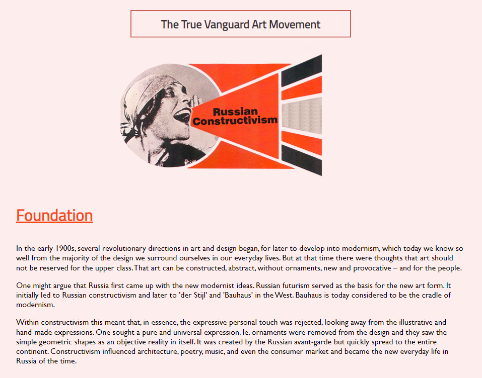
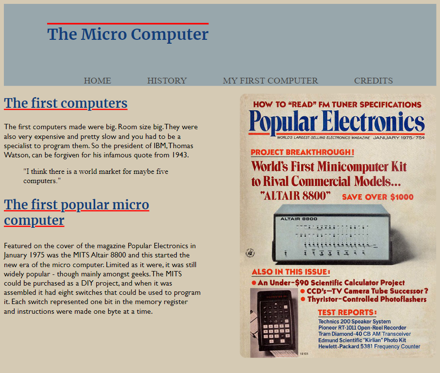

This module served as a basic but intensive introduction to some of
the foundational tools of the Multimedia profession. Basic website
building using markup (HTML) and stylesheet (CSS) languages, centered
around design principles by the use of image processing (Photoshop),
vector drawing (Illustrator) and prototyping (XD), spanning over 3
seperate projects.
Russian Constructivism
Description
02.01.01 Individual assignment
First assignment of the Basic Web theme. A text description and
thematic images were provided with the purpose of creating a
mobile-first semantically marked up webpage, with good
readability, contrast and color pallete, and should follow at
least some Gestault Laws.
Process & Knowledge
I started off by creating a five-color palette as the basis of the
webpage from one of the images provided that was most appealing to
me personally.I incorporated some principals of Gestault Laws and
contrasts to the best of my understanding at the time, and chose
some fonts that best fit the text description and art style of the
theme while keeping in mind the importance of readability.
Correct semantic tags were applied wherever it was deemed
necessary.
Solution

History of the Micro Computer
Description
02.02.01 Individual assignment
Second assignment of the Basic Web theme. Building on top of the
knowledge gained from the previous assignment, a website
consisting of several pages was required with a grid-based layout
based on wireframes for a desktop view.
Process & Knowledge
Similar to the previous assignment, the main text to be used was
provided while the choice of accompanying imagery was entirely up
to us. I based my color palette and layout off of an image of an
old microcomputer magazine that fit well with the theme
description and text. An additional page describing our personal
experience of first encountering a computer, along with an
easy-to-use global navigation, was also necessary.
Solution

Interest Based Website
Description
02.03.01 Individual assignment
The third and final assignment of the basic web theme. As the
title implies, this is a website based on a personal interest. A
choice between 3 distinct design styles was given, with an
additional requirement that the site be responsive.
Process & Knowledge
Of the provided design styles, I ended up with the style: organic,
as this best fit the interest I chose. coffee. It was not my first
choice, as in this assignment I found myself overthinking my
choices and changing my mind often, but half way through I managed
to settle for the adapted style. Creating and updating a moodboard
aided in solidifying my decisions. Here I also opted for CSS
grid-areas, which helped create a more dynamic loading grid
centered around the contents rather than absolute positioning.Here
is also where the first types of user testing and media queries
were introduced that enable a website to be responsive.